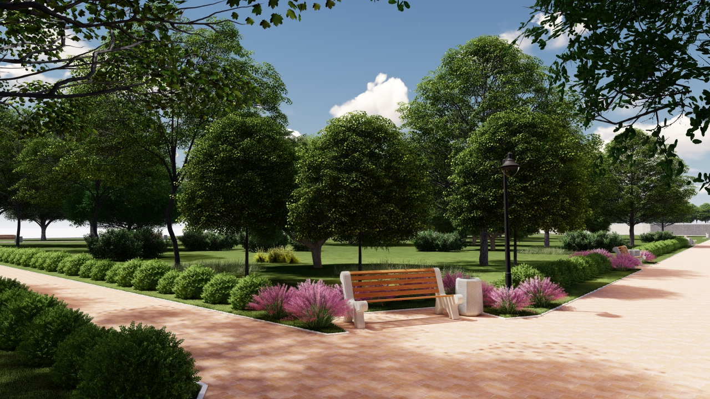
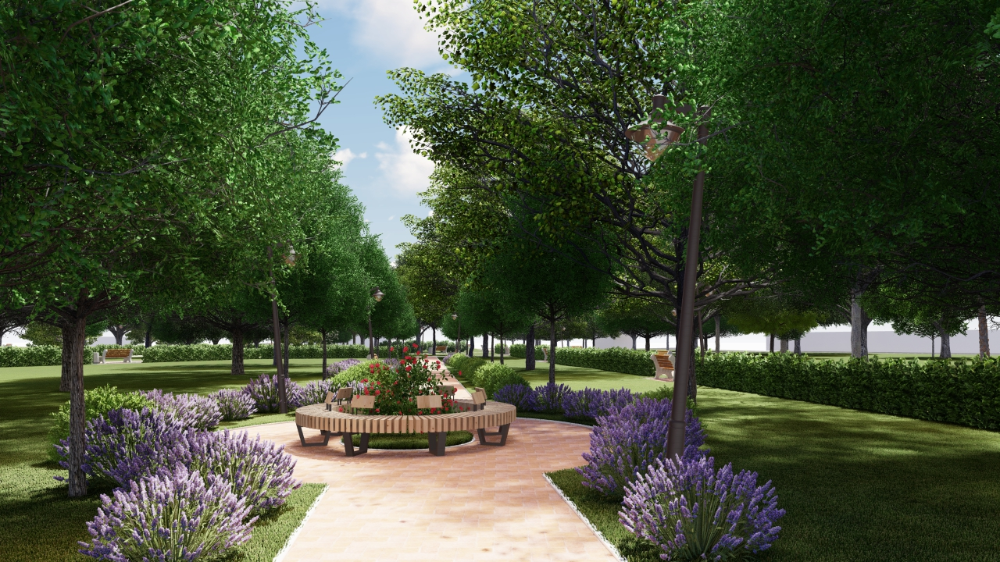

01
Park promenade
Landscape visualization
Architectural visualization · Landscape architecture
I create atmospheric visual stories for architecture, landscapes and places people want to remember.
Explore work↘
My background in landscape architecture lets me work with both the logic of a project and the feeling of a place. I translate plans, models and concepts into clear, compelling visuals for studios, developers and design teams.
A selection of architectural and landscape visualization studies, developed from concept through atmosphere and detail.
Planting, movement, shade, material and human scale — designed as one continuous experience.
Discuss a project ↗
Exterior, interior and real-estate imagery from a clear brief to a polished final frame.
Atmospheric images for parks, courtyards, public spaces and masterplans.
Composition, Photoshop refinement and visual storytelling for client presentations.